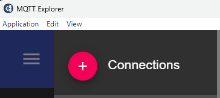
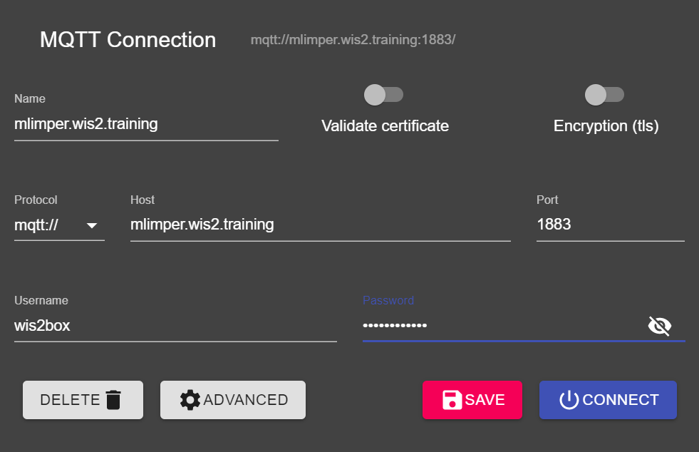

Inicializando o wis2box
Resultados de aprendizado
Ao final desta sessão prática, você será capaz de:
- executar o script
wis2box-create-config.pypara criar a configuração inicial - iniciar o wis2box e verificar o status de seus componentes
- acessar o wis2box-webapp, API, MinIO UI e o painel do Grafana em um navegador
- conectar-se ao wis2box-broker local usando o MQTT Explorer
Note
Os materiais de treinamento atuais estão usando o wis2box-1.0.0rc1.
Veja accessing-your-student-vm para instruções sobre como baixar e instalar o conjunto de software wis2box se você estiver realizando este treinamento fora de uma sessão de treinamento local.
Preparação
Faça login na sua VM designada com seu nome de usuário e senha e certifique-se de estar no diretório wis2box-1.0.0rc1:
cd ~/wis2box-1.0.0rc1
Criando a configuração inicial
A configuração inicial para o wis2box requer:
- um arquivo de ambiente
wis2box.envcontendo os parâmetros de configuração - um diretório na máquina host para compartilhar entre a máquina host e os contêineres wis2box definidos pela variável de ambiente
WIS2BOX_HOST_DATADIR
O script wis2box-create-config.py pode ser usado para criar a configuração inicial do seu wis2box.
Ele fará um conjunto de perguntas para ajudar a configurar sua configuração.
Você poderá revisar e atualizar os arquivos de configuração após a conclusão do script.
Execute o script da seguinte forma:
python3 wis2box-create-config.py
Diretório wis2box-host-data
O script pedirá que você insira o diretório a ser usado para a variável de ambiente WIS2BOX_HOST_DATADIR.
Observe que você precisa definir o caminho completo para este diretório.
Por exemplo, se seu nome de usuário é username, o caminho completo para o diretório é /home/username/wis2box-data:
username@student-vm-username:~/wis2box-1.0.0rc1$ python3 wis2box-create-config.py
Por favor, insira o diretório a ser usado para WIS2BOX_HOST_DATADIR:
/home/username/wis2box-data
O diretório a ser usado para WIS2BOX_HOST_DATADIR será definido como:
/home/username/wis2box-data
Está correto? (s/n/sair)
s
O diretório /home/username/wis2box-data foi criado.
URL do wis2box
Em seguida, será solicitado que você insira a URL para o seu wis2box. Esta é a URL que será usada para acessar o aplicativo web wis2box, API e UI.
Por favor, use http://<seu-hostname-ou-ip> como a URL.
Por favor, insira a URL do wis2box:
Para testes locais a URL é http://localhost
Para habilitar o acesso remoto, a URL deve apontar para o endereço IP público ou nome de domínio do servidor que hospeda o wis2box.
http://username.wis2.training
A URL do wis2box será definida como:
http://username.wis2.training
Está correto? (s/n/sair)
Senhas do WEBAPP, STORAGE e BROKER
Você pode usar a opção de geração de senha aleatória quando solicitado para WIS2BOX_WEBAPP_PASSWORD, WIS2BOX_STORAGE_PASSWORD, WIS2BOX_BROKER_PASSWORD e definir a sua própria.
Não se preocupe em lembrar essas senhas, elas serão armazenadas no arquivo wis2box.env no seu diretório wis2box-1.0.0rc1.
Revisar wis2box.env
Uma vez que os scripts estejam concluídos, verifique o conteúdo do arquivo wis2box.env no seu diretório atual:
cat ~/wis2box-1.0.0rc1/wis2box.env
Ou verifique o conteúdo do arquivo via WinSCP.
Question
Qual é o valor de WISBOX_BASEMAP_URL no arquivo wis2box.env?
Clique para revelar a resposta
O valor padrão para WIS2BOX_BASEMAP_URL é https://{s}.tile.openstreetmap.org/{z}/{x}/{y}.png.
Esta URL refere-se ao servidor de tiles do OpenStreetMap. Se você quiser usar um provedor de mapas diferente, você pode mudar esta URL para apontar para um servidor de tiles diferente.
Question
Qual é o valor da variável de ambiente WIS2BOX_STORAGE_DATA_RETENTION_DAYS no arquivo wis2box.env?
Clique para revelar a resposta
O valor padrão para WIS2BOX_STORAGE_DATA_RETENTION_DAYS é 30 dias. Você pode alterar este valor para um número diferente de dias, se desejar.
O contêiner wis2box-management executa um trabalho cron diariamente para remover dados mais antigos do que o número de dias definido por WIS2BOX_STORAGE_DATA_RETENTION_DAYS do bucket wis2box-public e do backend da API:
0 0 * * * su wis2box -c "wis2box data clean --days=$WIS2BOX_STORAGE_DATA_RETENTION_DAYS"
Note
O arquivo wis2box.env contém variáveis de ambiente que definem a configuração do seu wis2box. Para mais informações, consulte a documentação do wis2box.
Não edite o arquivo wis2box.env a menos que você tenha certeza das alterações que está fazendo. Alterações incorretas podem fazer com que seu wis2box pare de funcionar.
Não compartilhe o conteúdo do seu arquivo wis2box.env com ninguém, pois ele contém informações sensíveis, como senhas.
Iniciar o wis2box
Certifique-se de estar no diretório que contém os arquivos de definição do conjunto de software wis2box:
cd ~/wis2box-1.0.0rc1
Inicie o wis2box com o seguinte comando:
python3 wis2box-ctl.py start
Ao executar este comando pela primeira vez, você verá a seguinte saída:
Nenhum arquivo docker-compose.images-*.yml encontrado, criando um
Versão atual=Indefinido, última versão=1.0.0rc1
Gostaria de atualizar? (s/n/sair)
Selecione s e o script criará o arquivo docker-compose.images-1.0.0rc1.yml, baixará as imagens Docker necessárias e iniciará os serviços.
Baixar as imagens pode levar algum tempo, dependendo da velocidade da sua conexão com a internet. Esta etapa é necessária apenas na primeira vez que você iniciar o wis2box.
Inspeccione o status com o seguinte comando:
python3 wis2box-ctl.py status
Repita este comando até que todos os serviços estejam funcionando.
wis2box e Docker
O wis2box é executado como um conjunto de contêineres Docker gerenciados pelo docker-compose.
Os serviços são definidos nos vários docker-compose*.yml que podem ser encontrados no diretório ~/wis2box-1.0.0rc1/.
O script Python wis2box-ctl.py é usado para executar os comandos subjacentes do Docker Compose que controlam os serviços do wis2box.
Você não precisa conhecer os detalhes dos contêineres Docker para executar o conjunto de software wis2box, mas você pode inspecionar os arquivos docker-compose*.yml para ver como os serviços são definidos. Se você estiver interessado em aprender mais sobre Docker, pode encontrar mais informações na documentação do Docker.
Para fazer login no contêiner wis2box-management, use o seguinte comando:
python3 wis2box-ctl.py login
Dentro do contêiner wis2box-management, você pode executar vários comandos para gerenciar seu wis2box, como:
wis2box auth add-token --path processes/wis2box: para criar um token de autorização para o endpointprocesses/wis2boxwis2box data clean --days=<número-de-dias>: para limpar dados mais antigos do que um certo número de dias do bucketwis2box-public
Para sair do contêiner e voltar para a máquina host, use o seguinte comando:
exit
Execute o seguinte comando para ver os contêineres docker em execução na sua máquina host:
docker ps
Você deve ver os seguintes contêineres em execução:
- wis2box-management
- wis2box-api
- wis2box-minio
- wis2box-webapp
- wis2box-auth
- wis2box-ui
- wis2downloader
- elasticsearch
- elasticsearch-exporter
- nginx
- mosquitto
- prometheus
- grafana
- loki
Esses contêineres fazem parte do conjunto de software wis2box e fornecem os vários serviços necessários para executar o wis2box.
Execute o seguinte comando para ver os volumes docker em execução na sua máquina host:
docker volume ls
Você deve ver os seguintes volumes:
- wis2box_project_auth-data
- wis2box_project_es-data
- wis2box_project_htpasswd
- wis2box_project_minio-data
- wis2box_project_prometheus-data
- wis2box_project_loki-data
Assim como alguns volumes anônimos usados pelos vários contêineres.
Os volumes que começam com wis2box_project_ são usados para armazenar dados persistentes para os vários serviços no conjunto de software wis2box.
API do wis2box
O wis2box contém uma API (Interface de Programação de Aplicações) que fornece acesso a dados e processos para visualização interativa, transformação de dados e publicação.
Abra uma nova aba e navegue até a página http://<seu-host>/oapi.

Esta é a página inicial da API do wis2box (executada via contêiner wis2box-api).
Question
Quais coleções estão atualmente disponíveis?
Clique para revelar a resposta
Para visualizar as coleções atualmente disponíveis através da API, clique em Ver as coleções neste serviço:

As seguintes coleções estão atualmente disponíveis:
- Estações
- Notificações de dados
- Metadados de descoberta
Question
Quantas notificações de dados foram publicadas?
Clique para revelar a resposta
Clique em "Notificações de dados", depois clique em Navegar pelos itens de "Notificações de Dados".
Você notará que a página diz "Nenhum item" pois nenhuma notificação de dados foi publicada ainda.
Aplicativo web wis2box
Abra um navegador da web e visite a página http://<seu-host>/wis2box-webapp.
Você verá um pop-up pedindo seu nome de usuário e senha. Use o nome de usuário padrão wis2box-user e o WIS2BOX_WEBAPP_PASSWORD definido no arquivo wis2box.env e clique em "Entrar":
Note
Verifique seu wis2box.env para o valor do seu WIS2BOX_WEBAPP_PASSWORD. Você pode usar o seguinte comando para verificar o valor desta variável de ambiente:
cat ~/wis2box-1.0.0rc1/wis2box.env | grep WIS2BOX_WEBAPP_PASSWORD
Uma vez logado, mova seu mouse para o menu à esquerda para ver as opções disponíveis no aplicativo web wis2box:

Este é o aplicativo web wis2box para permitir que você interaja com seu wis2box:
- criar e gerenciar conjuntos de dados
- atualizar/revisar seus metadados de estação
- ingerir dados ASCII e CSV
- monitorar notificações publicadas no seu wis2box-broker
Usaremos este aplicativo web em uma sessão posterior.
wis2box-broker
Abra o MQTT Explorer no seu computador e prepare uma nova conexão para se conectar ao seu broker (executado via contêiner wis2box-broker).
Clique em + para adicionar uma nova conexão:

Você pode clicar no botão 'AVANÇADO' e verificar se você tem inscrições nos seguintes tópicos:
#$SYS/#

Note
O tópico # é uma inscrição curinga que se inscreverá em todos os tópicos publicados no broker.
As mensagens publicadas sob o tópico $SYS são mensagens do sistema publicadas pelo próprio serviço mosquitto.
Use os seguintes detalhes de conexão, certificando-se de substituir o valor de <seu-host> pelo seu nome de host e <WIS2BOX_BROKER_PASSWORD> pelo valor do seu arquivo wis2box.env:
- Protocolo: mqtt://
- Host:
<seu-host> - Porta: 1883
- Nome de usuário: wis2box
- Senha:
<WIS2BOX_BROKER_PASSWORD>
Note
Você pode verificar seu wis2box.env para o valor do seu WIS2BOX_BROKER_PASSWORD. Você pode usar o seguinte comando para verificar o valor desta variável de ambiente:
cat ~/wis2box-1.0.0rc1/wis2box.env | grep WIS2BOX_BROKER_PASSWORD
Observe que esta é a sua senha interna do broker, o Broker Global usará credenciais diferentes (somente leitura) para se inscrever no seu broker. Nunca compartilhe esta senha com ninguém.
Certifique-se de clicar em "SALVAR" para armazenar seus detalhes de conexão.
Em seguida, clique em "CONECTAR" para se conectar ao seu wis2box-broker.

Uma vez conectado, verifique se as estatísticas internas do mosquitto estão sendo publicadas pelo seu broker sob o tópico $SYS:

Mantenha o MQTT Explorer aberto, pois usaremos isso para monitorar as mensagens publicadas no broker.
MinIO UI
Abra um navegador da web e visite a página http://<seu-host>:9001:
Esta é a interface do usuário MinIO (executada via contêiner wis2box-storage).
O nome de usuário e a senha são definidos no arquivo wis2box.env no seu diretório de dados wis2box pelas variáveis de ambiente WIS2BOX_STORAGE_USERNAME e WIS2BOX_STORAGE_PASSWORD. O nome de usuário padrão é wis2box.
Note
Você pode verificar seu wis2box.env para o valor do seu WIS2BOX_STORAGE_PASSWORD. Você pode usar o seguinte comando para verificar o valor desta variável de ambiente:
cat ~/wis2box-1.0.0rc1/wis2box.env | grep WIS2BOX_STORAGE_PASSWORD
Observe que estas são as credenciais de leitura e escrita para a sua instância MinIO. Nunca compartilhe essas credenciais com ninguém. Os Serviços Globais só podem baixar dados da sua instância MinIO usando o proxy da web no bucket wis2box-public.
Tente fazer login na sua interface do usuário MinIO. Você verá que há 3 buckets já definidos:
wis2box-incoming: usado para receber dados de entradawis2box-public: usado para armazenar dados que são disponibilizados nas notificações WIS2, o conteúdo deste bucket é proxyado como/datana suaWIS2BOX_URLvia contêiner nginxwis2box-archive: usado para arquivar dados dewis2box-incomingdiariamente
<img alt="minio-ui-buckets.png" src="../../assets/img/wis